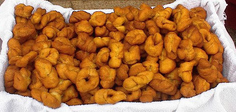

Papa et les pus grandes mèrvelles du monde
“J'aime bein les mèrvelles, Papa!” j'dis eune belle arlévée ensolilyie quand j'têmes auve la fanmil'ye à eune fête. Papa m'avait justément acaté eune poutchie d'mèrvelles d'eune stâlle.
“Bein seu, man p'tit,” m'dit Papa à travèrs eune bouochie d'mèrvelle, car il en avait eune poutchie, li étout. “Touos les Jèrriais aiment les mèrvelles. Mais ches mèrvelles né sont pon aussi grandes qu'les cheinnes qué j'mangis quand j'travaillais en Afrique dans ma jannèche.”

“Tu mangi des mèrvelles en Afrique, Papa?” j'lî d'mandis, tout surprîns. “Couquent-i' des mèrvelles en Afrique?”
“Bein, ch'n'est pon l's Afritchains tchi mangent les mèrvelles, tu sai. Nou-fait, dans les pays d'l'Afrique, i' mangent pustôt des steaks dé crocodile, des carpéleuses fricachies et des bourgailles d'autruche - ch'est les Jèrriais en autcheune carre du monde tchi graient des mèrvelles.”
“Tch'est qu'tu fis en Afrique, Papa?”
“Not' baté fut forchi d'rester au Cap pouor eune pause pouor des r'pathes, et tchiqu's'uns d'nous, les Jèrriais à bord, prîntent eune djobbe à la campangne pouor aîdgi auve la bâtithie d'un moulîn à ârdvarque....”
“Tch'est qu'ch'est, un moulîn à ârdvarque?”
“Tu sai qu'un moulîn à ieau peut produithe dé l'êlectricité?”
“Oui, Papa.”
“Mais en Afrique du Sud y'a des d'sèrts et i' n'y'a pon assez d'ieau pouor êt' faite sèrvi pouor chenna et don les gens d'là-bas avaient înventé l'moulîn à ârdvarque, pa'ce qu'il' avaient bein pus d'ârdvarques qué dg'ieau.”
“Mais tch'est qu'ch'est un ârdvarque?”
“Ch'est eune bête Afritchaine auve un long, long nez et des grandes ouothelles, un mio coumme un bein p'tit êléphant, tchi mange des freunmions.”
“Nou-fait, Papa, tu l'as înventé!”
“Si-fait, ch'est d'la puthe véthité. Ches ârdvarques ont la langue longue coumme eune vaûle tch'i' font sèrvi pouor litchi les freunmions dé d'dans lus creux. Et il' aiment tant mangi les freunmions qu'les Sud-Afritchains avaient pensé au moulîn à ârdvarque pouor lus donner du pouver êlectrique.”
“Coumme tchi qué chenna marche?”
“Tu vai qu'ch'est coumme eune reue à hanmster - lé hanmster couort dans sa reue et la reue touônne. Bein, i' faut penser à eune grande reue dans tchi nou met d's ârdvarques. D'vant la reue - tch'est attatchie à un généthateu êlectrique - nou pliaiche eune boêtée d'freunmions. L's ârdvarques dans la reue couothent pouor happer les freunmions, la reue touônnent et né v'là d'l'êlectricité.”
“Les pouôrres ârdvarques!”
“Quand i' sont êssoûffliés, i' méthitent du r'pos et eune bollée d'freunmions, et eune aut' êtchipe d'ârdvarques les rempliaichent. Mais en r'gardant ches ârdvarques à litchi lus babinnes auve lus longues, longues langues, v'là tchi nos donnait, nos les Jèrriais, un bouôn appétit. Et coumme dé raîson don, i' nos vînt à l'idée d'faithe des mèrvelles. Mais nos v'là dans lé d'sèrt auve des freunmions et d's ârdvarques, mais à chent milles d'eune boutique ou d'eune fèrme. Ioù trouver l's îngrédgiens? Preunmiéthement j'chèrchînmes pouor d's oeufs. I' n'y'avait pon d'poules mais y'avait d's autruches dans l'vaîthinné. J'râmassînmes des oeufs d'autruche et pis j'allînmes trouver du beurre. Bein seu qu'i' n'y'avait pon d'beurre dans lé d'sèrt, mais en trouvant du lait, j'éthêmes du beurre auprès un mio d'travas. J'triyînmes un troupé d'zèbres mais l'lait d'zèbre n'tait pon bouôn pouor l'èrchette.”
“Pouortchi pas?”
“Même ayant fait l'beurre, i' 'tait acouo rîlyi nièr et blianc - et nou n'veurt pon des mèrvelles rîlyies. J'eûnmes bein pus d'succès auve lé lait d'girafe, ouaithe qué j'eûnmes à construithe eune êtchelle dé branques et d'sèrpents s'tchis pouor pouver traithe les girafes.”
“Coumme tchi qu'tu fis l'beurre, Papa?”
“J'attatchînmes eune tchulyi en bouais au moulîn à ârdvarques, et j'fînmes lé beurre d'girafe bein vite. Pouor lé préchain îngrédgien, du cactus giant s'tchi au solé fit d'la fanmeuse flieu qu'j'mouleûnmes auve lé moulîn à ârdvarques, mais tch'est qu'j'pouvêmes faithe pouor lé chucre? I' n'y'avait pon d'chucre dans lé d'sèrt - mais nou n'peut pon faithe des mèrvelles sans tchiquechose pouor radouochi la pâte. Dans les touos vièrs temps avant l'întroduction du chucre nou soulait faithe sèrvi l'myi. Heutheusement, un êssaim d'moûques à myi avait lus rueûque dans l'vaîthinné. Lé problième 'tait qu'les moûques à myi d'chutte contrée-là 'taient ênormes - grandes coumme des balles dé paûme. Et don ch'tait chanceux qu'j'avêmes apporté nos ratchettes à seule fîn d'nos abuser auve un jeu d'paûme en travaillant. Les moûques à myi 'taient si grandes et b'santes qu'i' n'volaient pon bein quédaine, et don j'couothînmes dans la rueûque en châtchant nos ratchettes, et en baillant des ouappes auve les ratchettes ès moûques à myi quand ches'-chîn appréchîtent trop d'près... ch'tait piéthe qué Wimbledon, mais j'rêussînmes à collecter deux-trais bouqu'tées d'myi pouor nos mèrvelles.”
“Ouaou!”
“Véthe, ch'tait mangnifique: j'avêmes nos îngrédgiens pouor l'èrchette, mais j'n'avêmes pon tout à fait rêalisé la situâtion. I' nos fallait trais gros oeufs pour c'menchi - et j'en avêmes, trais gros oeufs. Mais ches oeufs d'autruche 'taient gros coumme des footballs. Épis l'lait d'girafe 'tait divèrsément haut et tu peux comprendre qu'lé beurre 'tait grand étout. Et la flieu v'nait du cactus giant du pays, et coumme dé raîson don la flieu 'tait bein grande étout. Et viyant qu'les moûques à myi 'taient hardi grandes, ieux, j'avêmes un amas d'grand myi étout. Coumme tu peux înmaginner, quand j'fînmes nos mèrvelles, i' 'taient les pus grandes mèrvelles du monde. J'fînmes sèrvi not' êtchelle dé branques et sèrpents s'tchis pouor grîmper amont seul'ment pour pouver coper la pâte atout eune scie. Épis j'rouôlînmes la pâte atout not' vainne. Mais pouor l'ver les mèrvelles et les mett' dans not' ênorme câssetrole (tchi 'tait un grand vièr tank à gaz), j'prînmes des cordes et j'att'lînmes les ârdvarques et l's encouothagînmes auve deux-trais pouongnies d'freunmions.”
“Euuuuh, des pouongnies d'freunmions!” j'excliâmis. “Mais dans tchi qu'tu bouoillis les mèrvelles? Y'avait-i' assez d'molle graîsse?”
“Oh nânnîn-dgia - j'fînmes sèrvi dé l'hielle dé coute!”
J'l'aime bein quand Papa m'acate des mèrvelles, mais il est un fichu vièr menteux.
Geraint Jennings
Avri 2003
Viyiz étout: